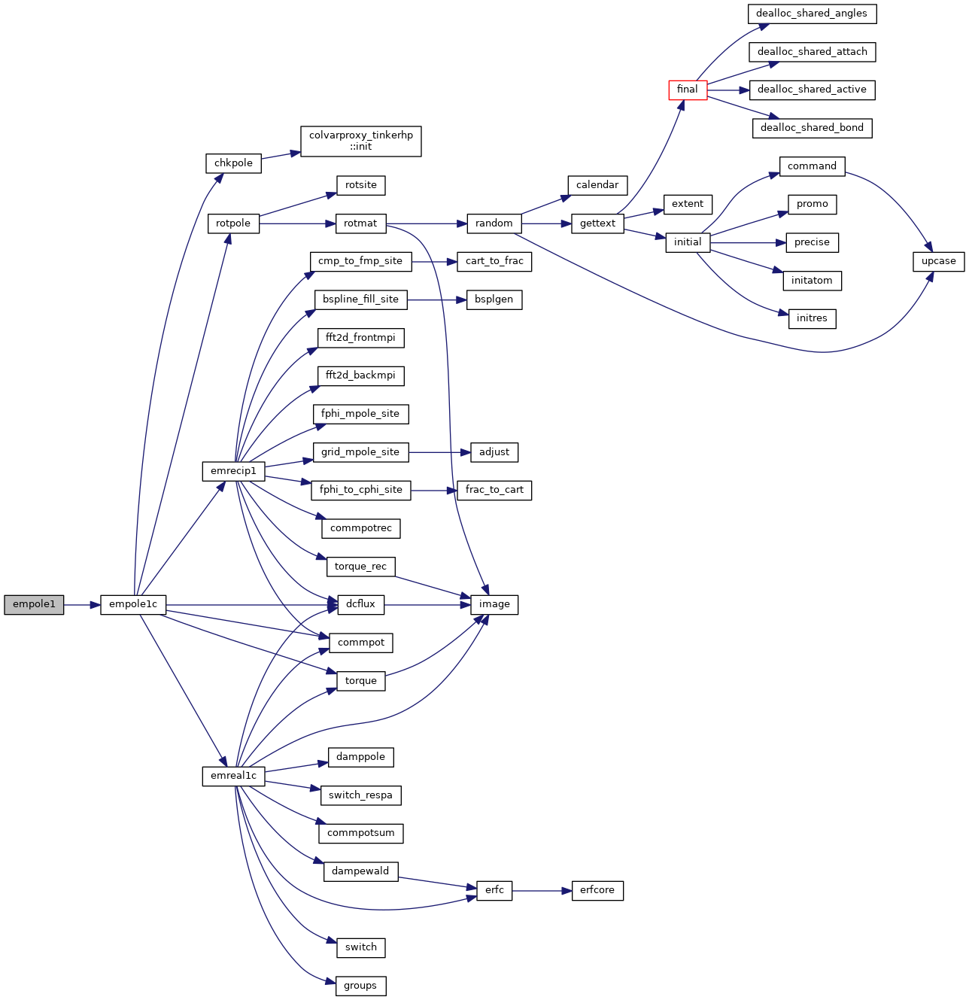
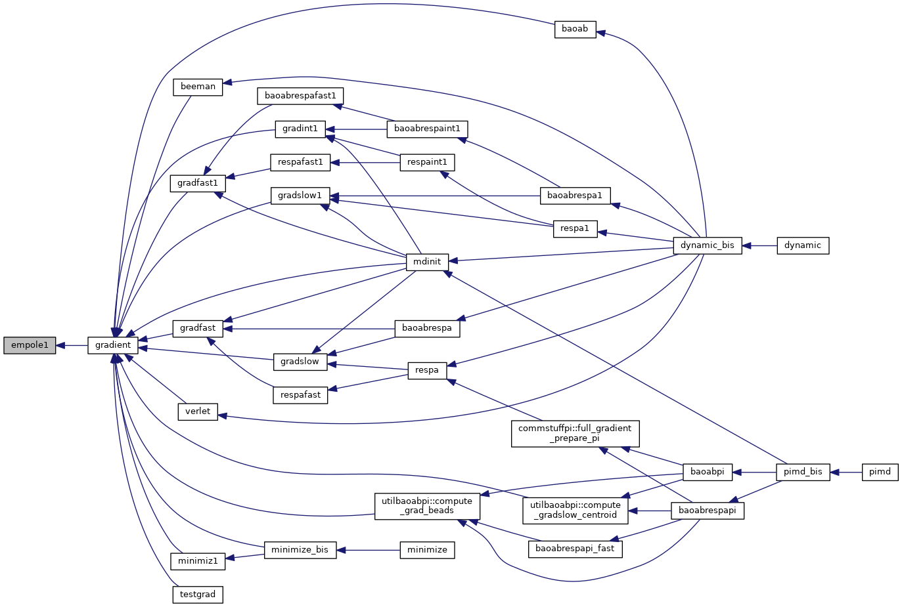
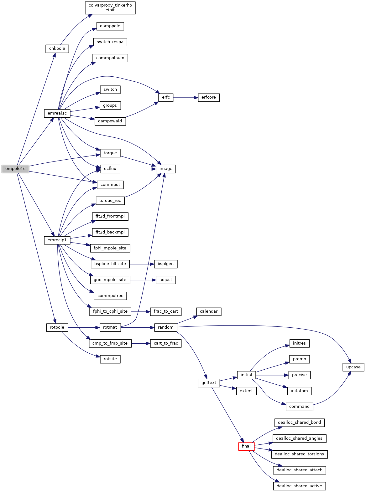
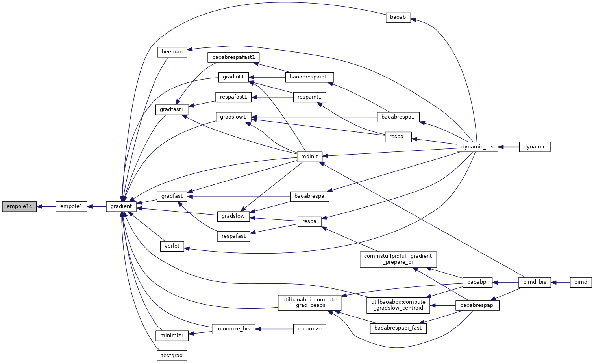
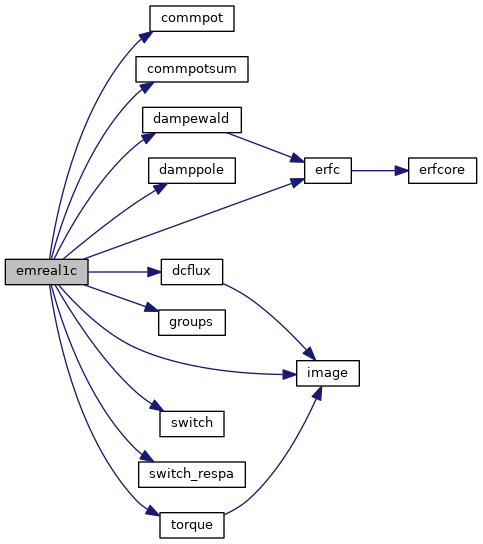
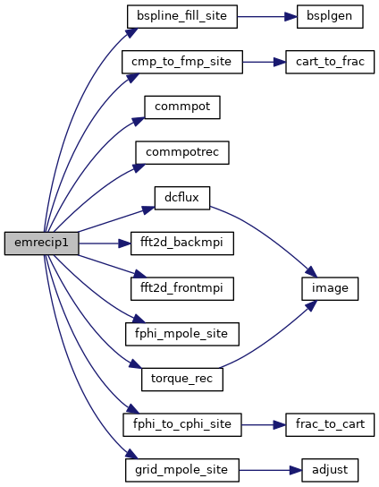
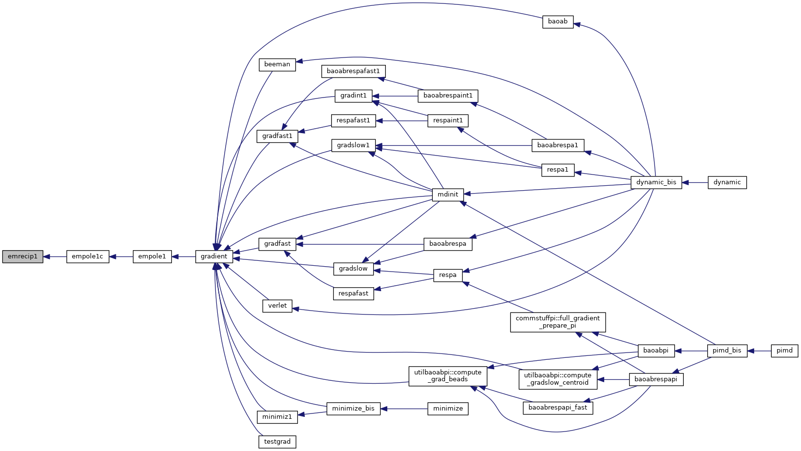

|
Tinker-HP v1.3
|
|
Tinker-HP v1.3
|
Go to the source code of this file.
Functions/Subroutines | |
| subroutine | empole1 |
| driver for calculation of the multipole and dipole polarization energy and derivatives with respect to Cartesian coordinates More... | |
| subroutine | empole1c |
| calculates the multipole energy and derivatives with respect to Cartesian coordinates using particle mesh Ewald summation and a neighbor list More... | |
| subroutine | emrecip1 |
| evaluates the reciprocal space portion of the particle mesh Ewald summation energy and gradient due to multipoles More... | |
| subroutine | emreal1c |
| evaluates the real space portion of the Ewald summation energy and gradient due to multipole interactions via a neighbor list More... | |
| subroutine empole1 | ( | ) |
driver for calculation of the multipole and dipole polarization energy and derivatives with respect to Cartesian coordinates
| no | params |
Definition at line 14 of file empole1.f90.
References empole1c().
Referenced by gradient().


| subroutine empole1c | ( | ) |
calculates the multipole energy and derivatives with respect to Cartesian coordinates using particle mesh Ewald summation and a neighbor list
| no | params |
Definition at line 51 of file empole1.f90.
References chkpole(), commpot(), dcflux(), emreal1c(), emrecip1(), rotpole(), and torque().
Referenced by empole1().


| subroutine emreal1c | ( | ) |
evaluates the real space portion of the Ewald summation energy and gradient due to multipole interactions via a neighbor list
| no | params |
Definition at line 893 of file empole1.f90.
References commpot(), commpotsum(), dampewald(), damppole(), dcflux(), erfc(), groups(), image(), switch(), switch_respa(), and torque().
Referenced by empole1c().

| subroutine emrecip1 | ( | ) |
evaluates the reciprocal space portion of the particle mesh Ewald summation energy and gradient due to multipoles
| no | params |
Definition at line 362 of file empole1.f90.
References bspline_fill_site(), cmp_to_fmp_site(), commpot(), commpotrec(), dcflux(), fft2d_backmpi(), fft2d_frontmpi(), fphi_mpole_site(), fphi_to_cphi_site(), grid_mpole_site(), and torque_rec().
Referenced by empole1c().


 1.8.5
1.8.5